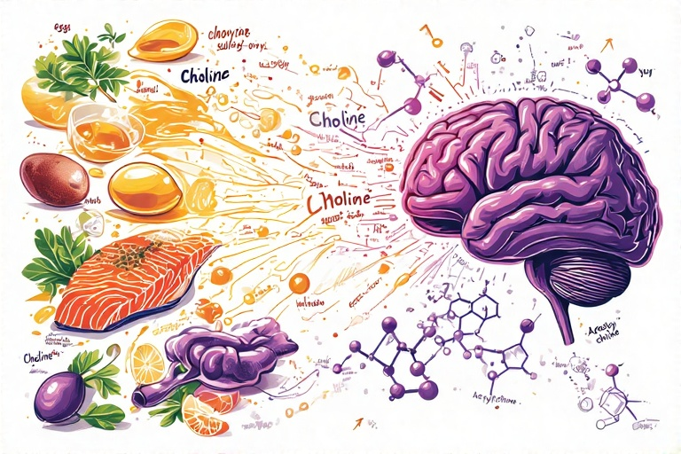
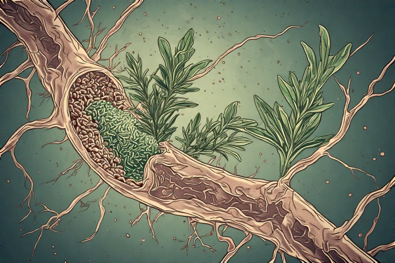

Te lupți cu "ceața mentală" și uiți frecvent unde ai pus cheile sau ce voiai să spui? Simți că viteza ta de gândire a încetinit și îți este greu să te concentrezi pe o singură sarcină? Aceste dificultăți cognitive pot fi un semn al unui sistem colinergic sub-optimal, care are nevoie de susținere.
Dacă dopamina este despre "a vrea", serotonina despre "a fi mulțumit" și GABA despre "a te calma", atunci acetilcolina (ACh) este despre "a gândi" și "a acționa". Este "scânteia" sistemului nervos, un neurotransmițător esențial care acționează ca o punte între minte și corp. A fost primul neurotransmițător identificat și joacă un rol dual critic: în sistemul nervos central, este piatra de temelie pentru funcții cognitive superioare precum memoria, învățarea, atenția și viteza de procesare. În sistemul nervos periferic, este mesagerul principal la joncțiunea neuromusculară, transmițând comanda de la nervi la mușchi pentru a iniția contracția.
Producția de acetilcolină este un proces elegant și rapid, dependent de disponibilitatea nutrienților. Sinteza are loc direct în terminațiile nervoase ale neuronilor colinergici. Procesul combină două elemente cheie: **colina**, un nutrient esențial obținut din dietă, și **acetil-coenzima A (acetil-CoA)**, o moleculă centrală în metabolismul energetic, derivată din glucoză. Reacția este catalizată de enzima colin acetiltransferază (ChAT). După ce este eliberată în fanta sinaptică și își transmite semnalul, acetilcolina este descompusă extrem de rapid de o altă enzimă, acetilcolinesteraza (AChE), în colină și acid acetic. Colina este apoi reciclată, fiind transportată înapoi în neuron pentru a reîncepe procesul.
O carență de acetilcolină se manifestă printr-un declin vizibil al agerimii mentale. Simptomele includ dificultăți de concentrare, o memorie de scurtă durată deficitară, "ceață cerebrală" și o viteză redusă de procesare a informațiilor. Deoarece ACh este crucială pentru contracția musculară, un deficit poate duce și la slăbiciune fizică. Legătura dintre un nivel cronic scăzut de acetilcolină și bolile neurodegenerative, în special boala Alzheimer, este bine documentată, degenerarea neuronilor colinergici fiind una dintre caracteristicile acestei afecțiuni. Cauzele carenței sunt adesea legate de o dietă săracă în colină și vitamine B, stres cronic (cortizolul inhibă eliberarea de ACh) și un somn de proastă calitate.
Pe de altă parte, un exces de acetilcolină, deși mai rar, poate fi la fel de problematic. Acesta poate duce la o suprastimulare a sistemului nervos parasimpatic, cauzând simptome precum crampe musculare, greață, vedere încețoșată și o stare de "paralizie prin analiză" – o dificultate de a lua decizii din cauza unui exces de gânduri și a unei stări de anxietate. Acest exces este adesea rezultatul expunerii la anumite substanțe care inhibă enzima AChE (precum unele pesticide sau medicamente), permițând acetilcolinei să se acumuleze necontrolat în sinapse. Echilibrul este, așadar, cheia pentru o funcționare optimă.
Iată 8 pași practici pentru a-ți susține natural sistemul colinergic:
Pasul 1: Consumă alimente bogate în colină
Colina este precursorul direct și cel mai important al acetilcolinei. Fără un aport adecvat din dietă, creierul pur și simplu nu are materia primă necesară pentru a produce acest neurotransmițător vital. Cele mai bogate surse alimentare de colină sunt cele de origine animală, în special gălbenușul de ou și ficatul de vită. Alte surse excelente includ carnea roșie, peștele (somon, cod), carnea de pui și lactatele.
Pentru vegetarieni și vegani, este esențial să combine diverse surse pentru a asigura un aport suficient. Lecitina din soia, germenii de grâu, broccoli, varza de Bruxelles și nucile sunt opțiuni valoroase. Asigurarea unui aport zilnic constant de colină este primul și cel mai fundamental pas în susținerea memoriei, a concentrării și a sănătății cognitive pe termen lung.
Pasul 2: Asigură aportul de grăsimi sănătoase

Creierul este compus în proporție de aproximativ 60% din grăsimi, iar integritatea membranelor celulare neuronale este crucială pentru o semnalizare eficientă. Acetilcolina acționează prin legarea de receptori situați pe aceste membrane. O dietă bogată în grăsimi sănătoase, în special acizi grași Omega-3 (DHA și EPA), asigură fluiditatea și flexibilitatea acestor membrane, permițând receptorilor să funcționeze optim.
Surse excelente de Omega-3 includ peștele gras (somon, macrou, sardine), semințele de in și de chia, și nucile. De asemenea, grăsimile saturate sănătoase, precum cele din uleiul de cocos sau avocado, oferă energie curată pentru creier și susțin structura celulară. O dietă săracă în grăsimi sau bogată în grăsimi trans (procesate) poate compromite sănătatea membranelor neuronale, afectând indirect eficiența sistemului colinergic.
Pasul 3: Prioritizează somnul REM
Somnul joacă un rol vital în curățarea și reorganizarea creierului, iar o fază specifică este deosebit de importantă pentru acetilcolină: somnul REM (Rapid Eye Movement). Aceasta este faza în care visăm cel mai intens și în care are loc consolidarea memoriei – procesul prin care amintirile de scurtă durată sunt transformate în amintiri de lungă durată. Acest proces este puternic dependent de activitatea neuronilor colinergici.
În timpul somnului REM, nivelurile de acetilcolină din creier sunt la fel de ridicate ca în starea de veghe activă, în timp ce alți neurotransmițători, precum serotonina și norepinefrina, sunt aproape inactivi. Acest mediu chimic unic permite creierului să "ruleze" și să consolideze informațiile învățate peste zi. Pentru a maximiza somnul REM, asigură-te că dormi suficiente ore (7-9 ore) și evită alcoolul înainte de culcare, deoarece acesta suprimă puternic această fază esențială a somnului.
Pasul 4: Antrenează-ți creierul constant

Principiul "folosește-l sau îl pierzi" se aplică perfect sistemului colinergic. Angajarea în activități noi și complexe din punct de vedere cognitiv stimulează neuronii colinergici să elibereze acetilcolină, întărind astfel căile neuronale existente și creând altele noi. Acest proces de neuroplasticitate este fundamental pentru menținerea agerimii mentale pe tot parcursul vieții.
Nu este suficient să faci același puzzle în fiecare zi. Cheia este noutatea și complexitatea. Încearcă să înveți o limbă nouă, un instrument muzical, să joci jocuri de strategie precum șahul sau Go, sau să citești cărți pe subiecte care te provoacă. Aceste activități forțează creierul să iasă din zona de confort, crescând cererea de acetilcolină și menținând sistemul activ și eficient.
Pasul 5: Gestionează stresul eficient
Stresul cronic este un inamic direct al funcției colinergice. Nivelurile ridicate de cortizol, hormonul stresului, au un efect inhibitor asupra eliberării de acetilcolină în hipocamp, o zonă a creierului esențială pentru învățare și memorie. Acesta este unul dintre motivele pentru care, atunci când suntem stresați, ne este greu să ne concentrăm și să ne amintim lucruri simple.
Implementarea unor practici regulate de reducere a stresului este, prin urmare, crucială. Meditația de tip mindfulness, exercițiile de respirație profundă și petrecerea timpului în natură sunt metode dovedite pentru a reduce nivelul de cortizol. Prin calmarea răspunsului la stres, creezi un mediu neurochimic în care sistemul colinergic poate funcționa optim, permițându-ți să gândești clar și să înveți eficient, chiar și în perioadele solicitante.
Pasul 6: Exerciții de coordonare minte-corp
Deoarece acetilcolina este esențială pentru joncțiunea neuromusculară, activitățile care necesită o conexiune fină între intenția mentală și execuția fizică sunt un antrenament excelent pentru acest sistem. Practici precum dansul, artele marțiale, yoga, tai chi sau chiar jonglatul necesită un grad înalt de concentrare, coordonare și conștientizare corporală.
Aceste activități nu doar că întăresc conexiunile dintre nervi și mușchi, dar stimulează și producția de acetilcolină în creier pentru a susține atenția necesară. Ele sunt o formă de antrenament dual, care îmbunătățește atât agilitatea fizică, cât și pe cea mentală. Alegerea unei activități care îți face plăcere asigură consecvența și transformă exercițiul într-o formă de meditație activă.
Pasul 7: Folosește plante și condimente colinergice
Anumite plante și condimente conțin compuși care pot susține sistemul colinergic. Rozmarinul și salvia, de exemplu, conțin substanțe care acționează ca inhibitori naturali blânzi ai enzimei acetilcolinesteraza (AChE), cea care descompune acetilcolina. Prin încetinirea acestei descompuneri, ele permit acetilcolinei să rămână activă în sinapse pentru o perioadă mai lungă, îmbunătățind astfel memoria și concentrarea.
Alte plante, precum Bacopa Monnieri (folosită în medicina ayurvedică) sau Ginkgo Biloba, au fost studiate pentru efectele lor de îmbunătățire a funcției cognitive, parțial prin modularea sistemului colinergic. Integrarea acestor ierburi în dietă, sub formă de ceaiuri sau condimente, poate oferi un sprijin subtil, dar constant, pentru sănătatea creierului. Ca întotdeauna, consultă un specialist înainte de a folosi suplimente concentrate.
Pasul 8: Asigură aportul de vitamine B
Pe lângă colină, vitaminele din complexul B joacă roluri esențiale în producția și funcționarea acetilcolinei. Vitamina B5 (acidul pantotenic) este un component direct al coenzimei A, fiind astfel indispensabilă pentru formarea moleculei de acetil-CoA, unul dintre cei doi precursori ai ACh. Fără suficientă vitamina B5, procesul de sinteză este blocat.
Vitamina B1 (tiamina) este, de asemenea, crucială pentru metabolismul energetic al neuronilor și pentru eliberarea neurotransmițătorilor. Surse bune de vitamine B includ cerealele integrale, carnea, ouăle, leguminoasele și legumele cu frunze verzi. O dietă variată și bogată în nutrienți asigură că sistemul tău colinergic are la dispoziție toți co-factorii necesari pentru a funcționa la capacitate maximă.